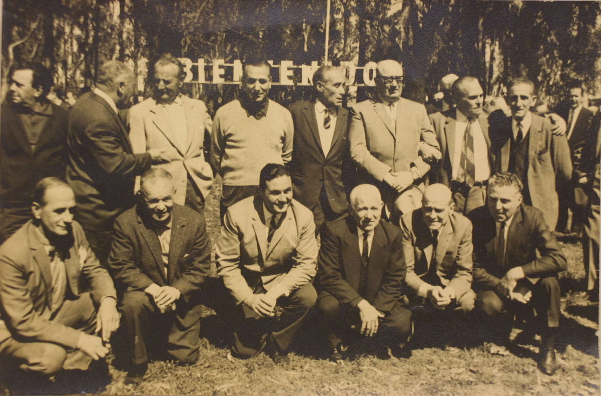
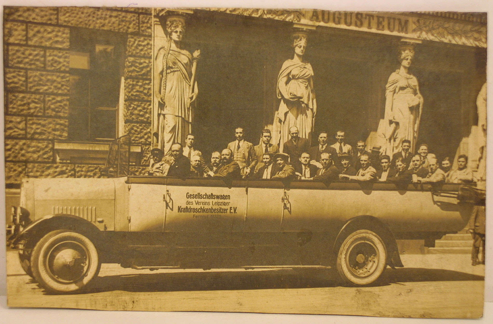

Historia
Boca ya era una pasión de multitudes por aquellos años de
glorias, el germen xeneize ya se había propagado por el interior del país, pero en 1925 daría el salto internacional.
La gira por Europa, en una época donde desplazar un grupo de futbolistas era atípico e inusual, marcó un hito. El plantel, compuesto por 12 jugadores propios y 5 invitados, se embarcó un 5 de febrero en Montevideo y llegó 22 días después a Vigo, con un único acompañante que se pagó el pasaje de su bolsillo como Victorio "Toto" Caffarena y que, además de hacer de masajista y utilero, dio inicio a la leyenda del Jugador Número 12. Fueron 19 partidos, con 15 triunfos, un empate y apenas tres derrotas, con 40 goles a favor y 16 en contra, que conmovieron allá y acá y sentaron las bases de los éxitos internacionales que vendrían muchos años más tarde. Tal fue el reconocimiento internacional y el fervor popular que despertó la gira que, cuando los jugadores bajaron del barco el 12 de julio, la Asociación Argentina de Football decidió consagrar a aquel equipo como campeón de Honor de la temporada 1925. Boca ya era un grande para el mundo entero.
Boca, que había ganado el último torneo del amateurismo, fue también el primer campeón del profesionalismo. El equipo de Mario Fortunato se consagró una fecha antes del cierre, tras vencer por 4-2 a Talleres de Remedios de Escalada. Luego, en la última jornada, se dio un lujo inmenso: superó por 3-0 a River como visitante. Ese Boca campeón contó con una dupla de ataque explosiva, de ésas que se entienden con una mirada, y que quedaría en la historia: Varallo-Cherro.
Entre 1934 y 1935, Boca consiguió la primera doble corona del fútbol argentino en la era profesional.
En el primer certamen, que se disputó a tres ruedas, Boca convirtió por primera vez en su historia más de 100 goles, y se consagró por un punto de ventaja sobre Independiente. ¿El goleador? Cherro, con 22 conquistas. Al año siguiente, y con la base de ese equipo campeón, más la incorporación del central brasileño Domingos Da Guía, Boca obtuvo el campeonato de 1935. Ganó en solidez defensiva y, sobre todo, en efectividad, con un impresionante del 85% de puntos, producto de 27 victorias, 4 empates y 3 derrotas.
La gira por Europa, en una época donde desplazar un grupo de futbolistas era atípico e inusual, marcó un hito. El plantel, compuesto por 12 jugadores propios y 5 invitados, se embarcó un 5 de febrero en Montevideo y llegó 22 días después a Vigo, con un único acompañante que se pagó el pasaje de su bolsillo como Victorio "Toto" Caffarena y que, además de hacer de masajista y utilero, dio inicio a la leyenda del Jugador Número 12. Fueron 19 partidos, con 15 triunfos, un empate y apenas tres derrotas, con 40 goles a favor y 16 en contra, que conmovieron allá y acá y sentaron las bases de los éxitos internacionales que vendrían muchos años más tarde. Tal fue el reconocimiento internacional y el fervor popular que despertó la gira que, cuando los jugadores bajaron del barco el 12 de julio, la Asociación Argentina de Football decidió consagrar a aquel equipo como campeón de Honor de la temporada 1925. Boca ya era un grande para el mundo entero.
Boca, que había ganado el último torneo del amateurismo, fue también el primer campeón del profesionalismo. El equipo de Mario Fortunato se consagró una fecha antes del cierre, tras vencer por 4-2 a Talleres de Remedios de Escalada. Luego, en la última jornada, se dio un lujo inmenso: superó por 3-0 a River como visitante. Ese Boca campeón contó con una dupla de ataque explosiva, de ésas que se entienden con una mirada, y que quedaría en la historia: Varallo-Cherro.
Entre 1934 y 1935, Boca consiguió la primera doble corona del fútbol argentino en la era profesional.
En el primer certamen, que se disputó a tres ruedas, Boca convirtió por primera vez en su historia más de 100 goles, y se consagró por un punto de ventaja sobre Independiente. ¿El goleador? Cherro, con 22 conquistas. Al año siguiente, y con la base de ese equipo campeón, más la incorporación del central brasileño Domingos Da Guía, Boca obtuvo el campeonato de 1935. Ganó en solidez defensiva y, sobre todo, en efectividad, con un impresionante del 85% de puntos, producto de 27 victorias, 4 empates y 3 derrotas.


